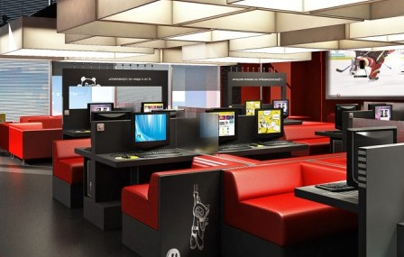

У нас дуже затишна атмосфера. В нас Ви зможете гарно відпочити: попити чаю чи кави з солодощами, «посерфіти» мережу Інтернет, поспілкуватися з друзями як он-лайн, так і офф-лайн, погратися у різні комп’ютерні ігри.
Дуже зручні та затишні місця для відпочинку. М’які дивани, зручні столики, потужні комп’ютери.
М. Бердянськ, вул. Волонтерів, буд. 53; тел.: +380 00 000000; ел.пошта: ******@gmail.com